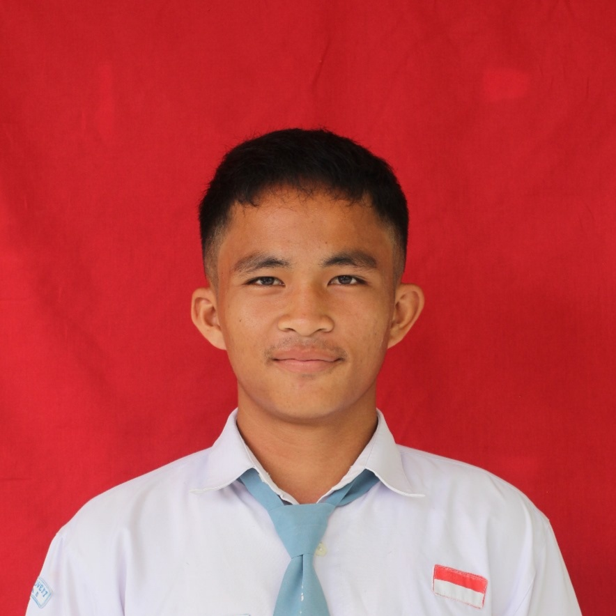

Media pembelajaran interaktif sederhana dari kami kelompok 7 tentang Multimedia.
semoga membantu☺️
Pengertian:
Multimedia adalah gabungan dari berbagai jenis media seperti teks, gambar, audio (suara), video, dan animasi yang digunakan untuk menyampaikan informasi secara lebih menarik dan interaktif..
Sejarah:
Sejarah multimedia merupakan perkembangan penggunaan berbagai media seperti teks, gambar, audio, video, dan animasi yang digabungkan untuk menyampaikan informasi secara lebih menarik dan interaktif. Awalnya, sebelum tahun 1980-an, media masih digunakan secara terpisah seperti buku, radio, dan televisi, kemudian berkembang pada era komputer awal ketika perangkat mulai mampu menampilkan teks dan grafik serta menggunakan CD-ROM sebagai media penyimpanan. Memasuki tahun 1990-an, multimedia berkembang pesat dengan hadirnya perangkat lunak seperti Microsoft PowerPoint dan Macromedia Flash yang memungkinkan integrasi berbagai elemen media. Pada era 2000-an, internet mendorong lahirnya multimedia interaktif seperti website dan platform video seperti YouTube, hingga akhirnya di era modern multimedia menjadi bagian penting dalam kehidupan sehari-hari melalui smartphone, media sosial, serta teknologi canggih seperti AR dan VR yang membuat penyampaian informasi semakin dinamis dan menarik.
Tokoh:
Beberapa tokoh penting dalam perkembangan multimedia antara lain Vannevar Bush yang memperkenalkan konsep "Memex" sebagai cikal bakal sistem informasi multimedia, Douglas Engelbart yang mengembangkan interaksi manusia dan komputer, serta Alan Kay yang menggagas konsep komputer personal dan media interaktif. Selain itu, Steve Jobs berperan besar dalam mengembangkan perangkat multimedia modern melalui produk Apple, dan Tim Berners-Lee yang menciptakan World Wide Web sehingga multimedia dapat diakses secara luas melalui internet.
Komponen:
Komponen multimedia terdiri dari beberapa unsur utama yaitu teks sebagai penyampai informasi dasar, gambar atau grafis untuk memperjelas visual, audio (suara) untuk memberikan efek pendengaran, video untuk menampilkan gerakan nyata, dan animasi untuk menciptakan tampilan yang lebih hidup serta interaktif. Selain itu, dalam pengembangannya juga digunakan perangkat lunak seperti Adobe Photoshop untuk mengolah gambar, Adobe Premiere Pro untuk mengedit video, serta Microsoft PowerPoint untuk menggabungkan berbagai komponen tersebut menjadi satu kesatuan multimedia yang menarik dan mudah dipahami.
Manfaat:
Manfaat multimedia sangat luas dalam berbagai bidang, terutama dalam mempermudah penyampaian informasi menjadi lebih menarik, interaktif, dan mudah dipahami karena menggabungkan teks, gambar, audio, dan video. Dalam dunia pendidikan, multimedia membantu proses belajar menjadi lebih efektif dan tidak membosankan, misalnya melalui presentasi menggunakan Microsoft PowerPoint atau video pembelajaran di YouTube. Di bidang bisnis, multimedia digunakan untuk promosi dan pemasaran agar lebih menarik perhatian konsumen, sementara dalam hiburan multimedia menghadirkan pengalaman yang lebih hidup seperti pada game dan film. Selain itu, multimedia juga memudahkan komunikasi digital melalui media sosial dan aplikasi modern sehingga informasi dapat disampaikan dengan cepat dan luas.
1. Jelaskan multimedia
2. Komponen multimedia
3. Manfaat multimedia
4. Sejarah multimedia
